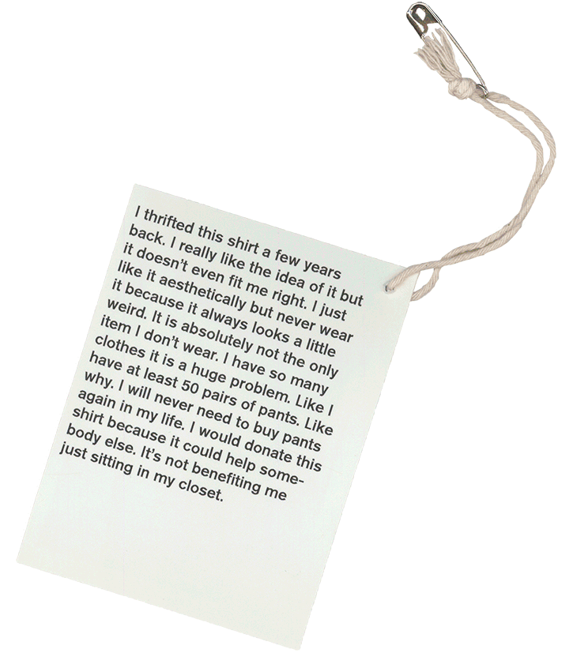
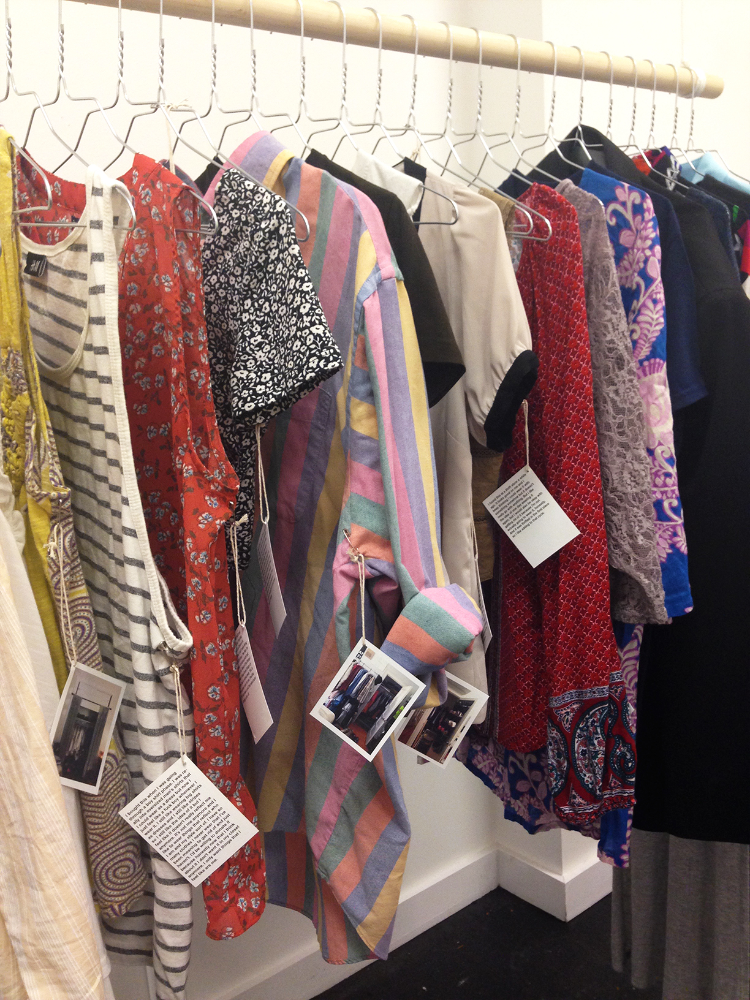

The Closet
This project investigated perceptions of value and worth as they pertain to the articles of clothing one keeps in their closet. A five question survey was created examining origins and contexts of a clothing item that the participant had volunteered as something they “never wear.” At the conclusion of the survey the participant was given the option to donate the item of clothing. The final exhibition included the donated clothing items (or lack thereof), their stories, and photographs of the closets they came from.
This project was produced in collaboration with John Sampson and Katie Dewald.
 